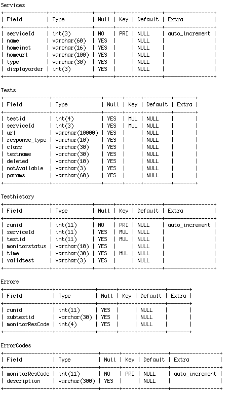
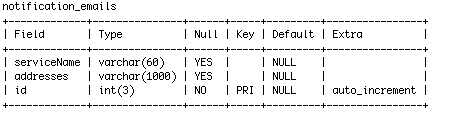

| Vaomonitor (Documentation) | ||||||
|
||||||
Hosted by:
HEASARC
|
|
|
Hosted by: HEASARC | ||||||||||||
Information on the vaomonitor design and daily testing can be found here


This table is used in the automatic notification system.Contact information for each VO service is listed here
Server notices are stored in this table.The start and end dates for each notice
are stored in GMT.
The reason_deleted field will either be "by user" or "expired"
This table is used to restrict certain xsitypes from appearing in the default validation
pages. Statistics will not be calculated for the restricted xsitype.
E.g. SSA types have been suppresed in the current setup.